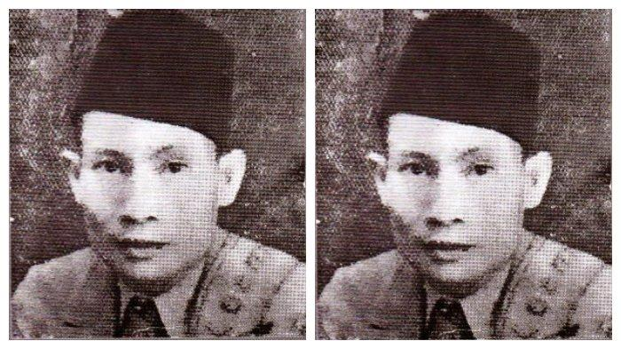
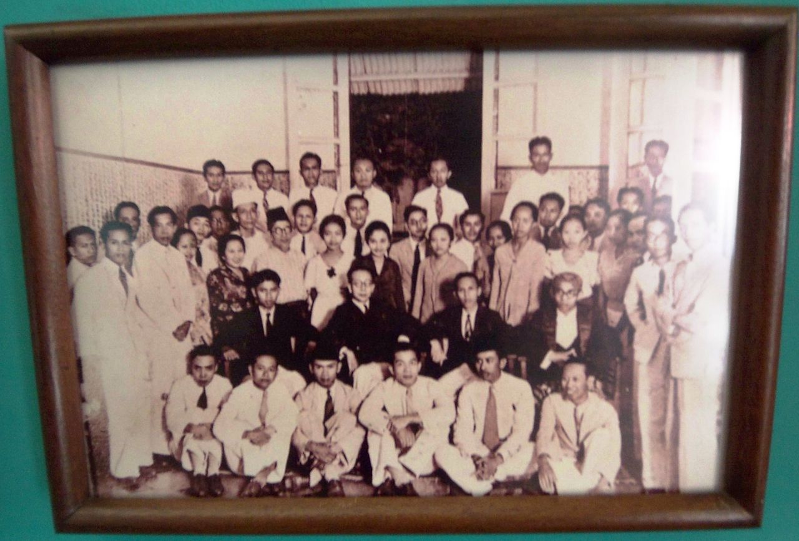
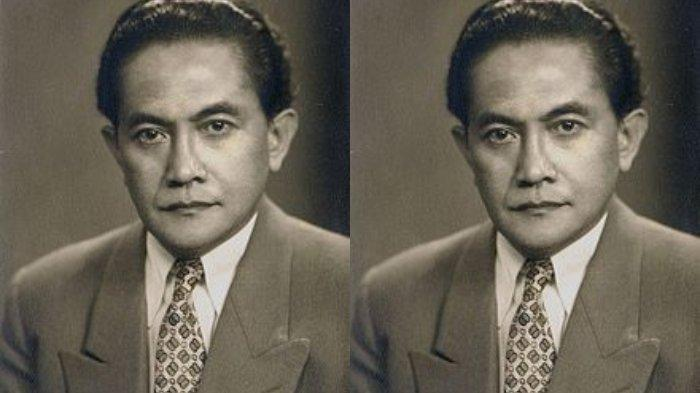
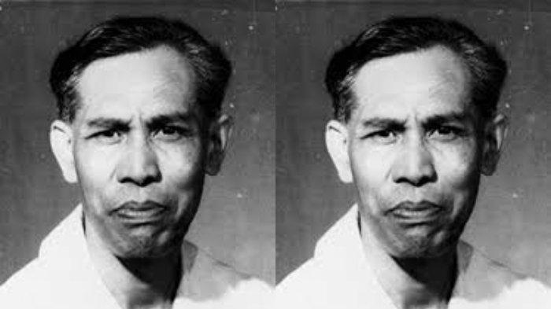
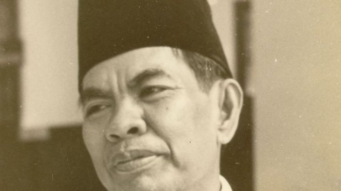
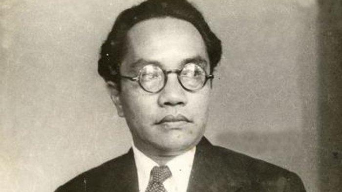
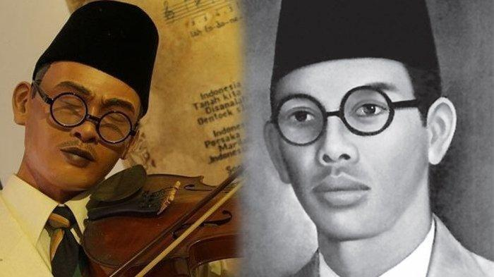
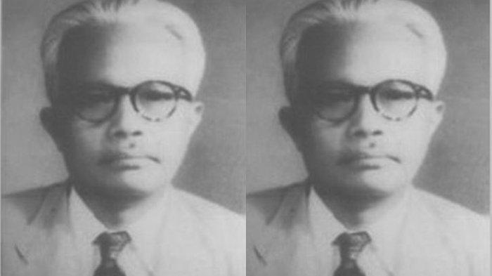
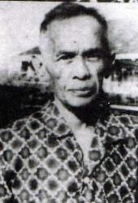

1. Soegondo Djojopoespito
2. Djoko Marsaid
3. Sunario Sastrowardoyo
4. J. Leimena
5. Mohammad Yamin
6. Amir Syarifuddin Harahap
7. W.R. Supratman
8. Sarmidi Mangoensarkoro
9. Kartosoewirjo
10. Kasman Singodimedjo

11. Mohammad Roem